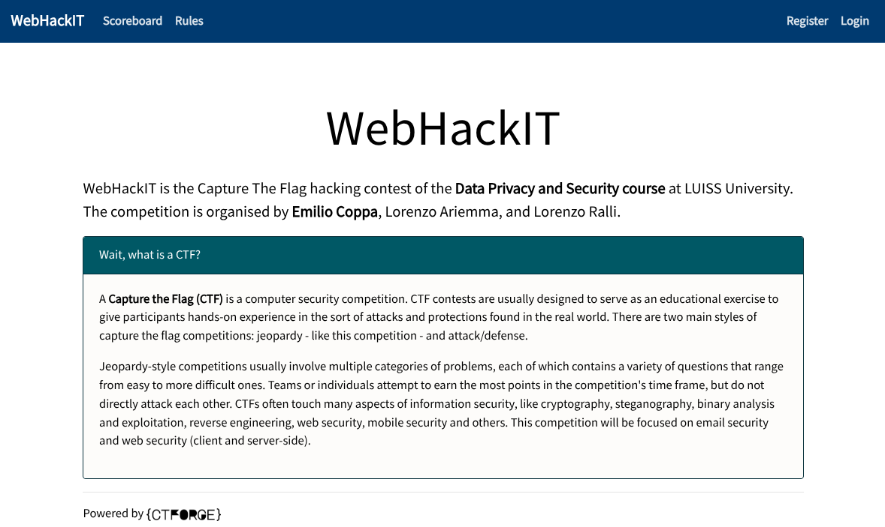
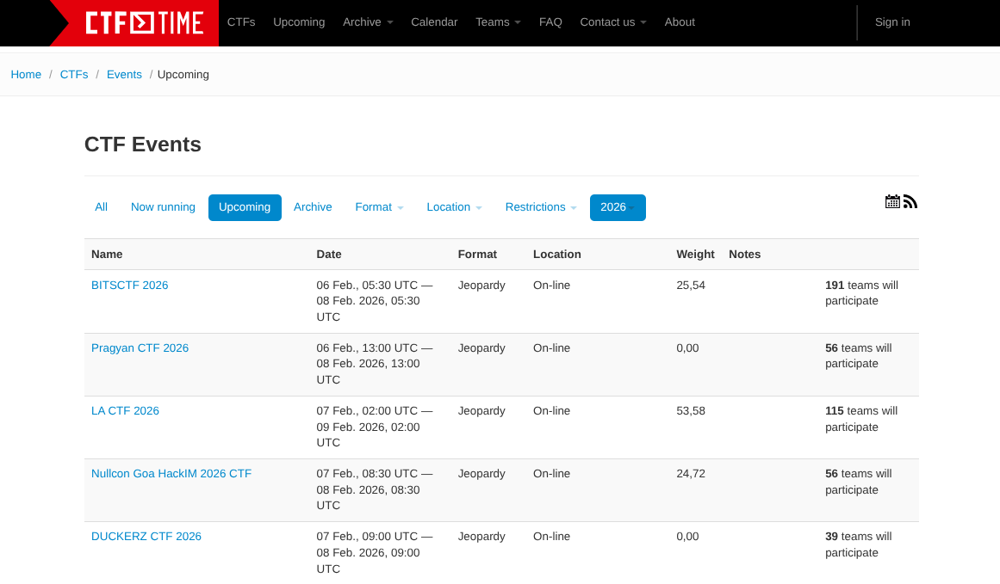
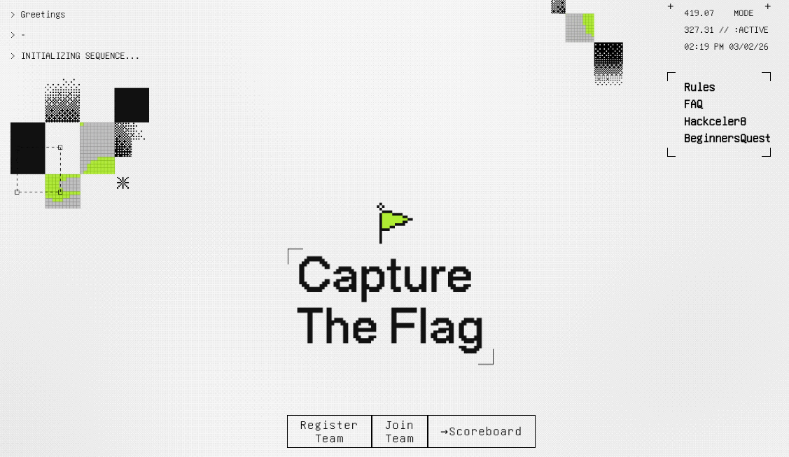
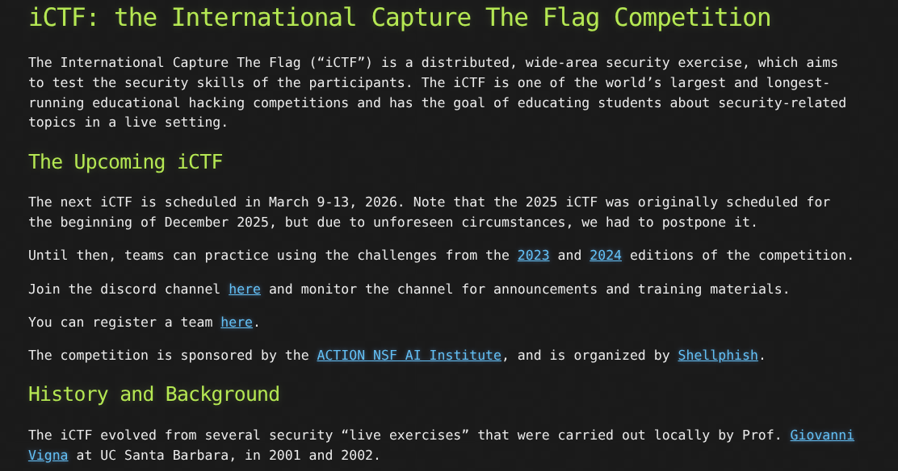
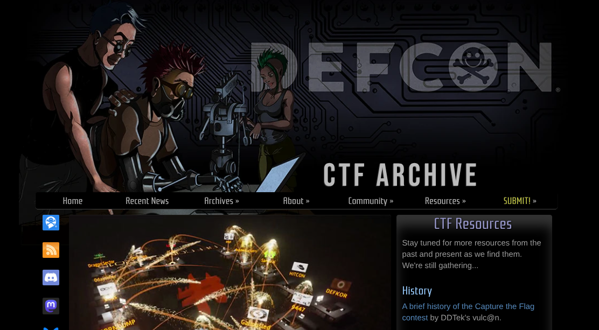
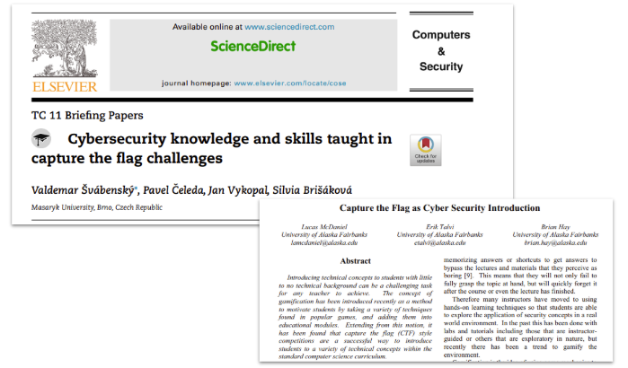
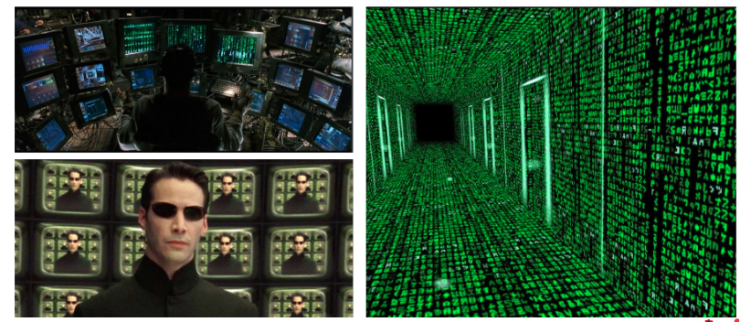

<!-- .slide: data-state="front hide-controls" --> <div id="title">Lab intro</div> <div id="subtitle">Data Privacy and Security</div> <div id="date">Data Science and Management (DASMA)</div> --- ## Capture-The-Flag (CTF) Competition! <div class="content-center"> <div class="cell-center"> URL: [**https://play.webhack.it**](https://play.webhack.it) </div> <p></p> </div> --- ## Wait, what is a CTF? <div class="content-center"> A **Capture the Flag (CTF)** is a computer security competition. CTF contests are usually designed to serve as an educational exercise to give participants hands-on experience in the sort of attacks and protections found in the real world. There are two main styles of capture the flag competitions: jeopardy - like this competition - and attack/defense. Jeopardy-style competitions usually **involve multiple categories of problems, each of which contains a variety of questions that range from easy to more difficult ones**. **Individuals** attempt to earn the most points in the competition's time frame, but **do not directly attack each other**. CTFs often touch many aspects of information security, like cryptography, steganography, binary analysis and exploitation, reverse engineering, web security, mobile security and others. </div> --- ## CTFs are quite common in cybersecurity <div class="content-center"> <div class="cell-center"> Check out: [**https://ctftime.org/**](https://ctftime.org/) </div> <p></p> </div> --- ## Some organized by big IT companies... <div class="content-center"> <div class="cell-center"> Google CTF: </div> <p></p> </div> --- ## Academic CTFs <div class="content-center"> One of the first CTF at university was [**iCTF**](https://ictf.cs.ucsb.edu/) by UC Santa Barbara: <p></p> </div> --- ## DEFCON CTF: the most iconic underground CTF <div class="content-center"> <p></p> </div> --- ## CTF as a training tool: learn by ~doing~ hack <div class="content-center"> <p></p> </div> --- ## Earn points by solving challenges <div class="content-center"> Each challenge: - It is a web application (in WebHackIT!) - It is designed to reproduce a real-world problem inside an isolated environment - It may simplify some assumptions and details to help understand the goal - In some cases, you have to show knowledge of some topics… they are just exercise - While in other cases, you have to find and then exploit a vulnerability! </div> --- ## How? <div class="content-center"> - The solution will depend on the specific challenge - During the course, we will show you how to solve some challenges - ...some of these challenges have been inspired from other past CTFs - We will show you some tools that can help you </div> --- ## You think it will like this... <div class="content-center"> <p></p> </div> --- ## It will be like this... <div class="content-center"> </div> --- ## How do you show that you have solved the challenge? <div class="content-center"> - Each challenge contains a secret string (which is hard to guess!) - This is called a flag… hence the name Capture-The-Flag! - A flag could be obtained after successfully performing some “tasks” or it is the result of attack (e.g., you can login as an admin) - Easy to recognize since the format will be: `WIT{<random chars>}` [hard to guess!] - Just insert the the flag on the web portal to get the points! </div> --- ## How the score is calculated? <div class="content-center"> <div class="fragment" data-fragment-index="0"> For the game and just for fun: - each challenge is initially worth 500 points - the points are gradually reduced the more people solve the challenge - hence, an easy challenge will value less than a hard challenge <br/> <br/> </div> <div class="fragment" data-fragment-index="1"> For the exam: - the score is given by: $$ 30 \\cdot \\frac{\\text{number of challenges solved by a student}}{\\text{total number of challenges presented in class}} $$ - other challenges, not presented in class, may give bonus points </div> </div> --- ## First challenge? Register an account! <div class="content-center"> - URL: [**https://play.webhack.it/register**](https://play.webhack.it/register) - Registration token: **`webhackit_2526`** </div>